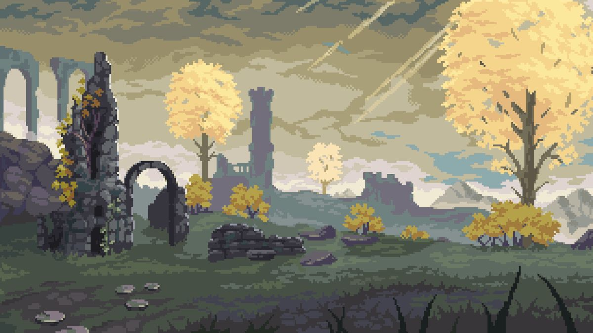
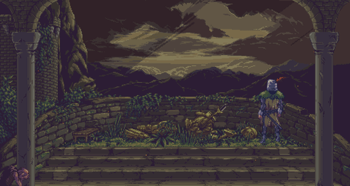
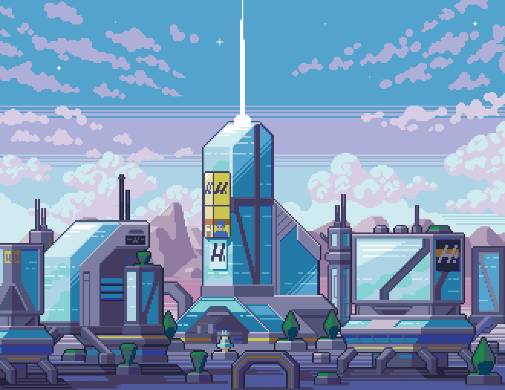
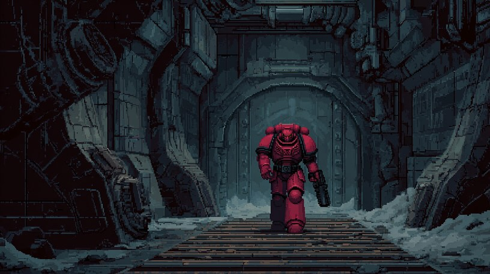
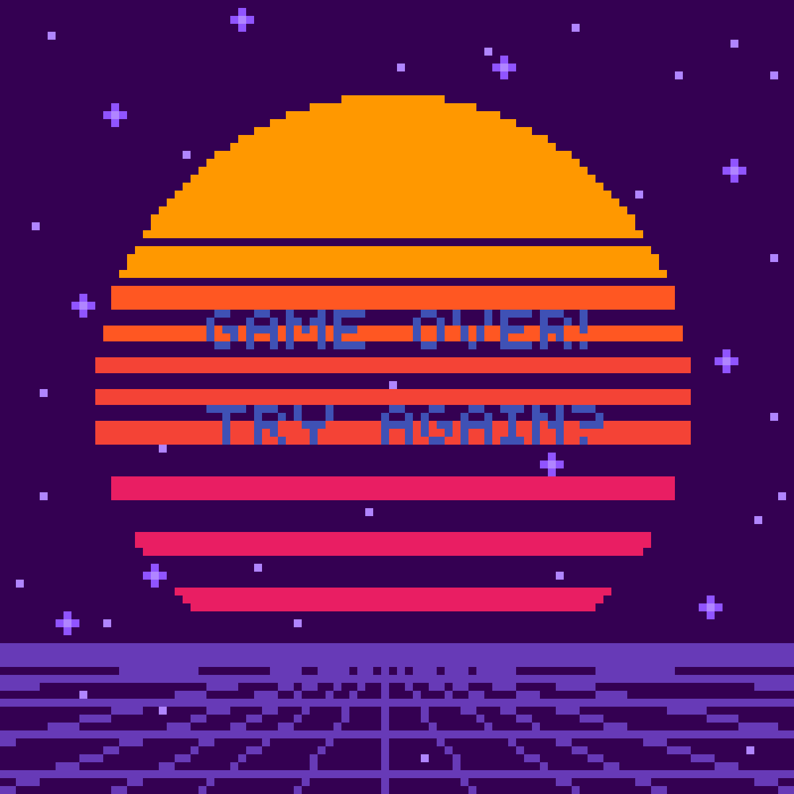
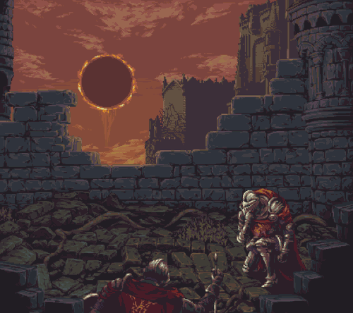
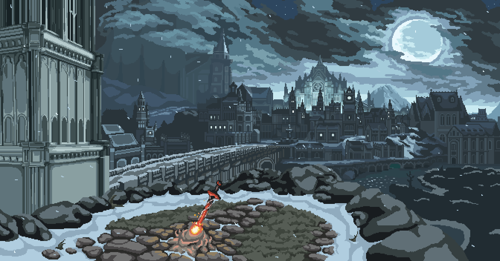

Это было самое начало пути. На этом этапе важно было проникнуться
основами и настроиться на учёбу. И, возможно, подумать, как новые
знания могут повлиять на ваше будущее.
Решиться начать было непросто. Ощущение, будто бы выбор пути сложнее и
стрессовее самого пути.
1 спринт: Я — чистый лист

<С чего начать?>
На первых этапах мы работали со страхами и сомнениями, которые часто
испытывают новички. Один из них — страх перед чистым листом. Это,
конечно же, намного сложнее, чем боязнь куска бумаги. Часто за этим
ощущением скрываются более глубокие вопросы: с чего начать? а вдруг
будет слишком сложно? что, если я не справлюсь?
На момент начала обучения у меня уже был опыт разработки мобильных
приложений на Flutter, из-за этого первые 2 спринта HTML и CSS меня
немного подбешивали, так как привычные шаблоны ломались, а
предлагаемые решения встречали сопротивление где-то внутри меня.
1 спринт: А если не получится?

<Как продолжать?>
Первый проект — позади! Но это всё ещё самое начало пути. Радость
могла быстро померкнуть и смениться ожиданием провала. Или вы,
наоборот, могли вдохновиться успехами и поверить в себя.
Больше всего я боялся не успеть. Из-за учёбы времени на "пожить"
осталось меньше, а повседневные заботы никуда не делись. Как
оказалось, если не пренебрегать учёбой и стабильно каждый день
учиться, то всё можно успеть.
2 спринт: Погоня за идеалом

<Желание и стремление>
На этом этапе вы уже достаточно разбирались в основах вёрстки, чтобы
понять, как много ещё впереди. Вы могли попытаться погнаться за
идеалом и понять, что он недостижим. А, может, вы вовсе и не
подвержены перфекционизму и вместо того, чтобы сделать идеально,
старались просто сделать.
Второй спринт показался самым лёгким. Первый спринт показал, чего
можно ждать, и как проходит обучение, а мозг был готов ненасытно
поглощать информацию.
2 спринт: О тех, кто рядом

<Движение вперёд>
Всё это время вы были не одиноки (хотя, возможно, иногда и
чувствовали, что одни против целого мира). Вас окружали одногруппники,
команда сопровождения и просто близкие люди, которым можно
пожаловаться, если очередной макет просто так не поддавался. Осваивать
что-то новое легче, когда рядом есть единомышленники, не правда ли?
Чувство самозванца - главный противник, с которым приходится бороться
в новом коллективе. Когда кажется, что все вокруг лучше, невольно
наступают упаднические настроения. Важно осознать, что у каждого есть
возможность становиться лучше, а главное - стать не лучше кого-то, а
превзойти самого себя.
3 спринт: Обходные стратегии

<Главное - пытаться>
На этом курсе вы постоянно решали разные задачи. В какой-то момент вам
могло показаться, что решения просто иссякли. Значит, пришло время
посмотреть на задачу под другим углом.
Проходя этот спринт, казалось, что информации для запоминания слишком
много. Новые функции, работу которых было сходу не понять, еденицы
измерения, которые непонятно, как все запомнить. Ещё нужно помнить все
базовые команды терминала и Git. Понятно, что это можно за 15 секунд
себе напомнить через интернет, но на собеседовании так не скажешь =).
3 спринт: Когда опускаются руки

<Сила не сдаться>
Во время учёбы часто возникает чувство, когда не знаешь, за что
хвататься. Вроде и проектную пора сдавать, и задачи хочется порешать,
и в теории получше разобраться, и жизнь не забыть пожить. В такие
моменты очень нужна концентрация. Вспомните, откуда вы её черпали.
Несмотря на то, что этот спринт был не из простых, итоговый проект
дался довольно просто, и делать его было интересно. Первый проект,
который был принят ревьюером с первого раза.
«Сейчас я здесь»

<Предстоящие испытания>
Сейчас вы уже очень много знаете о вёрстке. Но это только начало.
Во-первых, впереди ещё много материала про «красотищу». Во-вторых, с
окончанием курса учёба не заканчивается. Вёрстка — это целый мир. И
этот мир постоянно меняется. Познать его полностью не получится, но
это тот случай, когда важен сам процесс познания. Ведь часто путь — и
есть результат.
Этот спринт был пока что самым непростым. Градиенты, трансформации и
анимации ложились в голову легко, а вот всё остальное приходилось
впихивать силой. Особенно понравилось делать анимации.